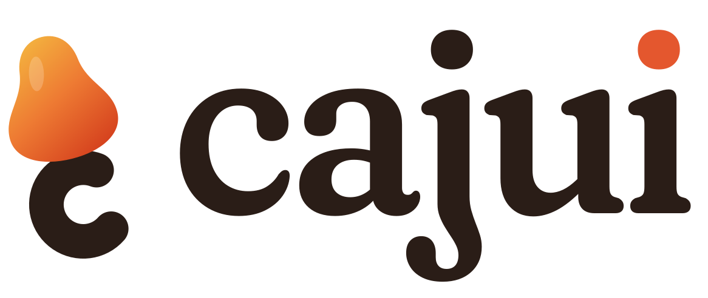
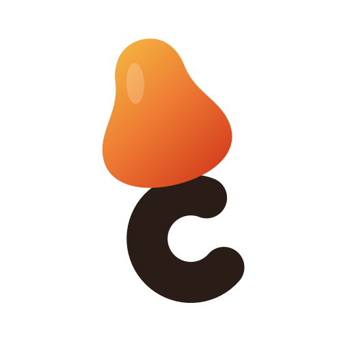
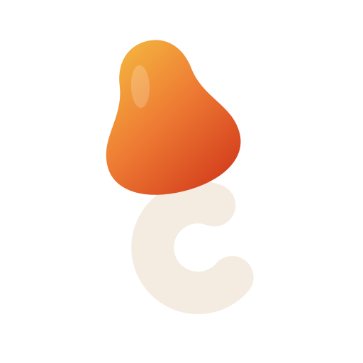
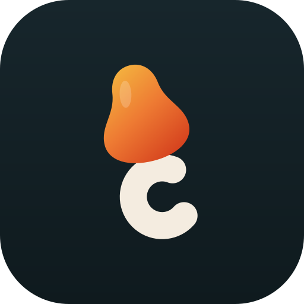
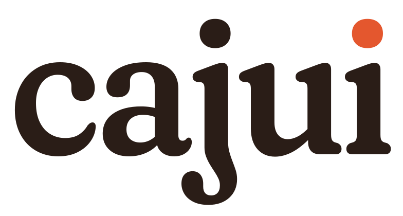
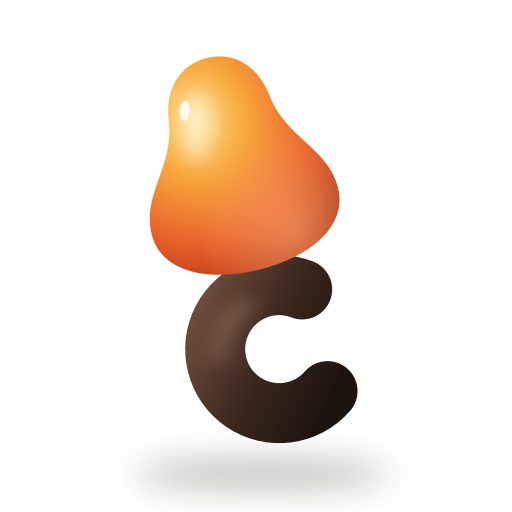

Todo mês rebrota.
O cajuí é o cajuzinho rasteiro do Cerrado tocantinense: pequeno, resistente, e o primeiro a rebrotar depois da queimada. É essa a relação que o app propõe com o dinheiro — clareza sem alarme, e sempre um próximo passo.
01 · Logo
O fruto e a castanha em forma de C
O fruto carrega a cor; a castanha, um arco grosso aberto à direita, lê ao mesmo tempo como castanha e como a inicial. O pingo do último i em laranja é o aceno ao acento de cajuí que a marca não usa.

Símbolo · fundo claro
Símbolo · fundo escuro
Ícone do app · dentro da zona segura do Android
Logotipo · Fraunces em curvas
Assinatura horizontal02 · Cor
A paleta do Cerrado
Superfícies quentes e calmas, um único acento vivo, ouro reservado para conquista. Todo par texto/fundo foi medido contra a WCAG 2.2; os números completos estão em color.md.
#E4572EAcento de marca. Só em áreas grandes e gráficos (3,42:1).#B93D17Botões e texto de destaque. Branco sobre ele: 5,61:1.#D9A441Conquista e deleite. Nunca como cor de texto.#2E6F57Sobra, progresso, confirmação. 5,53:1 na areia.#8C4A2FAtenção sem alarme: candidato a cor de déficit. 6,22:1.#2F6F8FInformação, foco de teclado, links. 5,15:1.#2A1D17Texto principal no claro. 15,17:1 na areia.#FBF6EEFundo do tema claro. Branco puro fica para cartões.#0F1A1EFundo do tema escuro: azul-petróleo, não preto.#F4ECE0Texto principal no escuro. 15,10:1 na noite.#FF8A5CO acento no tema escuro. 7,62:1 na noite.#6FCBA6Positivo no tema escuro. 9,07:1 na noite.03 · Tipografia
Uma serifa macia e uma grotesca precisa
Fraunces dá a voz: curvas macias que conversam com o fruto e um ar editorial. Geist dá o número: algarismos tabulares, alinhados em coluna, sem enfeite.
Sobram R$ 412 até domingo.
R$1.284,50
R$ 96,07
- DisplayFechamento de setembro
- TítuloGastos variáveis
- CorpoVocê usou 37% do limite da semana.
- LegendaAtualizado há 2 minutos
04 · Voz
Descreve, não julga. E sempre aponta um passo.
Quem está no aperto para de abrir o app quando a primeira coisa que vê é uma bronca. O Cajui fala como um amigo que entende de conta: diz o que aconteceu, o que isso significa e o que dá para fazer agora.
Você gastou demais este mês!
Faltam R$ 180 para fechar setembro. Separei três ajustes que cobrem isso.
Ops! Algo deu errado. Tente novamente mais tarde.
Não consegui ler este comprovante: a foto ficou escura demais para o texto aparecer. Quer tirar outra ou digitar o valor?
Categoria não identificada.
Fiquei em dúvida entre transporte e alimentação. O que foi essa compra de R$ 23,90 no posto?
Parabéns!!! Você é incrível!!! 🎉🎉🎉
Semana fechada com R$ 64 de sobra. Foi a terceira seguida.
05 · Iconografia
Traço para o dia a dia, volume para os momentos
Ícones de interface em traço único de 1,75 px, cantos arredondados, grade de 24. Os ícones-herói — onboarding, estado vazio, conquista — ganham volume: 3D macio, fosco, luz vinda de cima à esquerda, sempre nas cores da paleta.
Interface
Passe o cursor: a resposta em mola é a mesma que o app usa no toque.
06 · Marca aplicada
Como isso fica numa tela
À esquerda, um dia comum no tema claro. À direita, o mês que não fecha no tema escuro — sem vermelho, sem ponto de exclamação, com o próximo passo na frente.
sábado · 19 de setembro
Sobram R$ 412 até domingo.
Limite da semana R$ 650 · usados R$ 238
Hoje · R$ 8,50 em dinheiro · R$ 38,40 no vale
Cartão · fatura de outubro
O cartão aparece como visão derivada, nunca como uma despesa a mais.
fechamento · setembro
Faltam R$ 180 para fechar o mês.
Dá para cobrir sem mexer nos fixos. Três ajustes possíveis:
Ajustes sugeridos
- Mercado pelo mínimo da faixa+ R$ 90
- Pausar uma assinatura+ R$ 55
- Dois almoços no vale+ R$ 44
Contexto
Déficit na versão neutra e acionável. A versão em vermelho entra na Fase 3 para comparação.